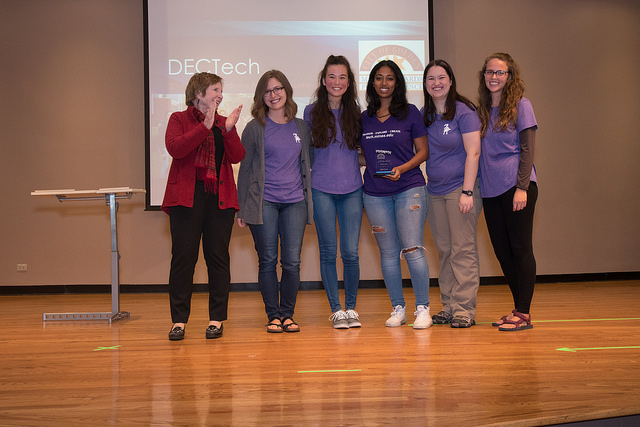
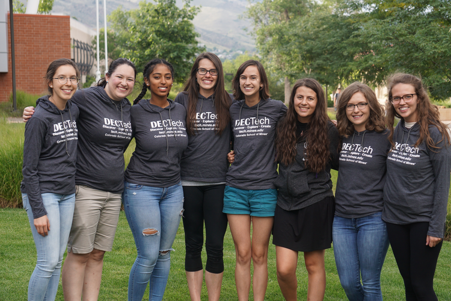

Studies show that girls' interest in science/engineering subjects starts to decline the closer the girls get to middle school. As a result, far fewer women pursue careers in the various STEM fields than their male counterparts.
In response to this information, in the Fall of 2012, Dr. Tracy Camp and her female Computer Science students created a program targeting the 3rd-6th grade age group. This program is designed to foster and continue girls' interest in the STEM subjects through creative and interactive activities. The program is very popular with local elementary students, and has grown to include middle and high school aged girls.
To read more about what female industry leaders and influencers say about women in the STEM fields, and their ideas on how to get more girls into STEM, click this link.
DECtech is happy to say we satisfy #2, #3, #4, #5, #9 directly … and a few others indirectly!
In July 2020, the DECtech outreach program earned the 2020 Inspiring Programs in STEM Award. This honor was presented by INSIGHT Into Diversity magazine, and recognizes "unique and innovative efforts for improving access to science, technology, engineering, and math for underrepresented students."
On October 3, 2017, the DECtech team was presented Golden's Goldmine Award for Excellence, for our outstanding contribution to the community of Golden and the Colorado School of Mines.
On June 9, 2017, Dr. Camp was honored with the first Million Women Mentors' Stand Up for STEM award for her impact on young women through her mentoring, programming, and industry partnerships. Read more here!
On January 18, 2016, Dr. Camp received the MLK Recognition Award for her commitment to diversity and, specifically, the Discovering Technology program. Read more about Dr. Camp here.

DECtech 2017-18 Instructors
(from left: Lydia, Megan S, Bethel, Shelly, Megan K, Alex, Sarah, Leah; not pictured: Becca)